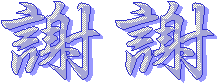

|
|

蔡長賢 先生、施秀雅 女士 接受訪問、提供資料。 微軟公司 製作FrontPage、Word使我們製作網頁、文字編輯 友立資訊 製作PhotoImpact7.0使我們編輯圖片 Systems公司 製作 ACDsee使我們能夠觀看圖片 Caplio公司 製作數位相機和驅動程式使我們能夠快速收集圖片 線西國中 提供硬體及技術和所需 參考、摘選文獻、資料、圖片、音樂 社會科學概論─專訪花燈製作 國中美術課本三上 中國傳統節日─http://202.130.245.40/ch-jieri/yuanxiao/4.htm 中華文化天地─http://edu.ocac.gov.tw/culturechinese/vod07html/vod07_01.htm |